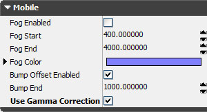
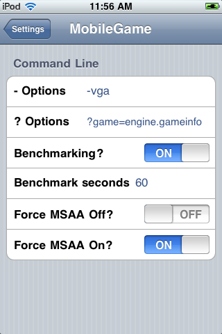

UDN
Search public documentation:
UnrealOniOSJP
English Translation
中国翻译
한국어
Interested in the Unreal Engine?
Visit the Unreal Technology site.
Looking for jobs and company info?
Check out the Epic games site.
Questions about support via UDN?
Contact the UDN Staff
中国翻译
한국어
Interested in the Unreal Engine?
Visit the Unreal Technology site.
Looking for jobs and company info?
Check out the Epic games site.
Questions about support via UDN?
Contact the UDN Staff
Unreal Engine 3: Apple iOS 概要
概要
「Unreal Engine 3」を使用して Apple の iOS プラットフォーム用ゲームを開発する場合、他のモバイルプラットフォーム用ゲームを開発する場合と多くの点で類似しています。ただし、このプラットフォームには独自の機能と留意すべき事項があります。このドキュメントでは、「Unreal Engine 3」を使用して iOS デバイス用ゲームを開発する方法について概説します。はじめに
「Unreal Engine 3」を使用して iOS デバイス用ゲームを開発する場合は、特別な要件およびワークフロー、注意すべき事項があります。注意すべき事項にはつぎのようなことが含まれます。すなわち、iOS デバイス 用ゲームを作成するための開発環境のセットアップ、および、iOS デバイス上で稼働する Unreal プロジェクトをテスト / パッケージ化 / デプロイするためのワークフローが含まれます。 iOS デバイス用ゲームの開発準備および作成に関する詳細については、 入門編 : iOS 用の開発 のページを参照してください。ガンマ補正

ガンマ補正を有効にするには
モバイルプラットフォームでは、ガンマ補正がデフォルトで有効になっていません。モバイル用ゲームのためにガンマ補正を利用するには、作成するマップのための World Properties (ワールド プロパティ) 内で、 Use Gamma Correction (ガンマ補正を使用する) を有効にします。
パフォーマンスへの配慮
ガンマ補正をモバイルデバイス上で使用すると、パフォーマンス上かなり顕著な影響が生じる場合があります。この機能は、主に、将来のモバイルデバイスで使用されることが想定されています。現在のところは、iPad 2 が唯一、ガンマ補正を使用するゲームを実際に稼働できるデバイスです。VGA 出力
エンジンは基本的な VGA 出力をサポートしており、VGA Dock Adapter (VGA ドックアダプタ) を使用します。エンジンが 3D ビューポートを VGA 上に表示する際、次の各事項に注意してください。- ゲームの起動時に、コマンドライン上に -vga をつける必要があります。
- ゲーム起動前に VGA コネクタを接続する必要があります。
- エンジンは、サポートされている解像度について VGA デバイスにクエリして、幅が 1024 以下である最高の解像度を選択します。(1024は通常、iPad の 1024 × 768 の解像度に適合させるために使用されます。)
- スクリーン / ムービーのロードは、たいてい正しくは見えません。
- デバイス上のタッチ入力は、ソリッドでピンク色のゾーンで実行されます。ただし、現在のところ入力位置の再マップはできません。したがって、640 × 480 の解像度が選択されている場合は、ピンク色のゾーンのうち左上の 640 × 480 のゾーンを使用する必要があります。
iOS の「設定」アプリケーションを利用したコマンドラインの設定
エンジンでは、外部の iOS「設定」アプリケーション内のスイッチと文字列を使用してゲームのコマンドラインを変更することができます。(外部の iOS「設定」アプリケーションとは、WiFiやサウンド、機内モードなどを設定するときに開く標準の「設定」アプリケーションのことです）。設定項目は、Settings.bundle ディレクトリ内に置かれている Root.plist という名前のファイルで指定します。//depot/UnrealEngine3/MobileGame/Build/IPhone/Resources/Settings/Settings.bundle/Root.plist //depot/UnrealEngine3/MobileGame/Build/IPhone/Resources/Settings/Distro_Settings.bundle/Root.plist「設定」の中は次のようになっています。
 |  |
<dict>
<key>Type</key>
<string>PSToggleSwitchSpecifier</string>
<key>Title</key>
<string>Benchmarking?</string>
<key>Key</key>
<string>-benchmark</string>
<key>DefaultValue</key>
<false/>
</dict>
<dict>
<key>Type</key>
<string>PSTextFieldSpecifier</string>
<key>Title</key>
<string>Benchmark seconds</string>
<key>Key</key>
<string>-benchmarkseconds=</string>
<key>KeyboardType</key>
<string>NumberPad</string>
</dict>
設定できる項目は多数あります。それぞれ、最初の行が - Type - 設定のタイプです。PSToggleSwitchSpecifier は On/Off のスイッチです。 PSTextFieldSpecifier はテキストボックスです。
- Title - ユーザーに表示されるものです。 (これが長すぎると、TextField のスペースがなくなりテキストを表示できなくなります)
- Key - 非常に重要な情報です。コマンドライン上に直接置かれる情報です。
-または?から始まる必要があります。 Toggle （トグル / 切り替え） は、On に設定されている場合に Key がコマンドライン上に置かれます。TextField は、テキストが空でない場合に Key がコマンドライン上に置かれ、ユーザーによって入力されたテキストがそれに続きます。 - DefaultValue - 設定項目の初期値を自由に設定することができます。
- KeyboardType - 使用するキーボードの種類です。TextField の詳細については、 ドキュメント を参照してください。
「設定」アプリケーションの非コマンドライン用法
Settings.bundle において この部分 で記述されているものと同じ設定項目を表示することもできます。PSGroupSpecifier を使用して新たなグループを作成した後に、- および ? 以外で始まる Key を伴った設定項目を作成すると、mobile LoadSettingバージョンの文字列
 UnrealFrontend によって iOS アプリケーションバンドルがパッケージ化されると、エンジンのバージョンに関する key/value のペア、および、iOS 実行ファイルに関するビルドデータが追加されます。この Key の名前は EpicAppVersion です。この値は非出荷ビルドにおいて表示されます。ただし、この表示を強制的に有効 / 無効にすることができます。そのためには、MobileGame's IPhoneEngine.ini ファイルと同じようにして、Engine.ini ファイルを使用します。
UnrealFrontend によって iOS アプリケーションバンドルがパッケージ化されると、エンジンのバージョンに関する key/value のペア、および、iOS 実行ファイルに関するビルドデータが追加されます。この Key の名前は EpicAppVersion です。この値は非出荷ビルドにおいて表示されます。ただし、この表示を強制的に有効 / 無効にすることができます。そのためには、MobileGame's IPhoneEngine.ini ファイルと同じようにして、Engine.ini ファイルを使用します。
[Build.Version] bForceShowAppVersion=False bForceHideAppVersion=False